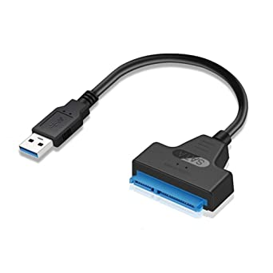
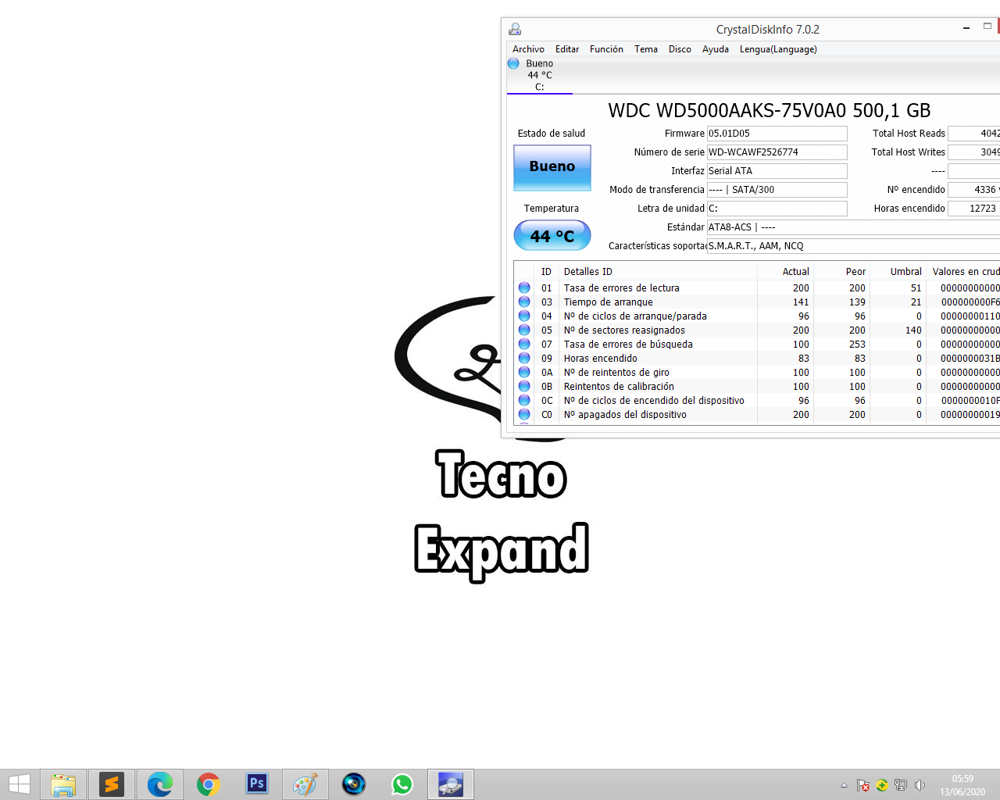
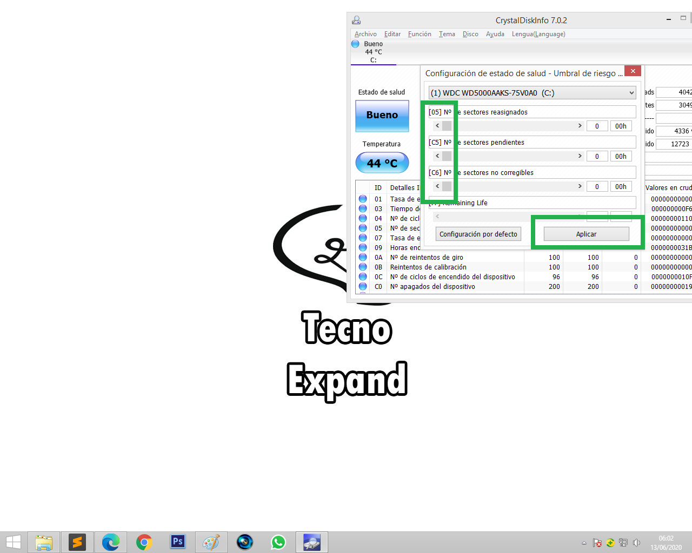
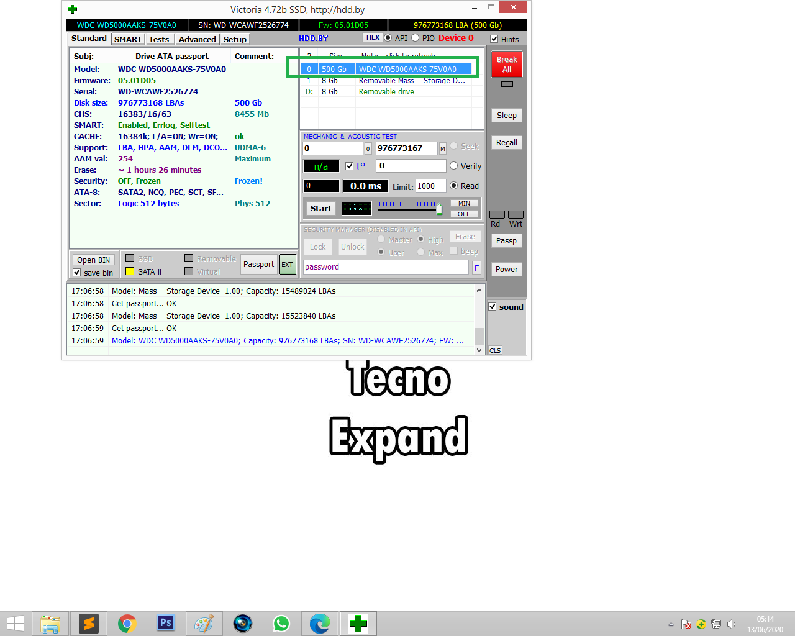
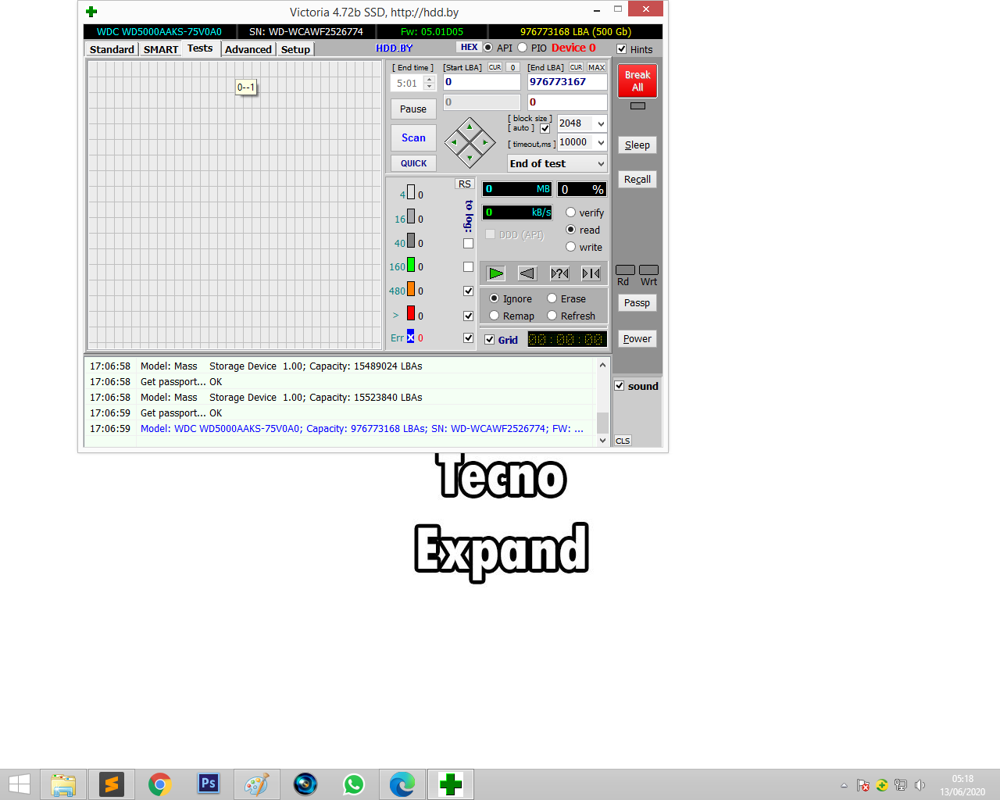
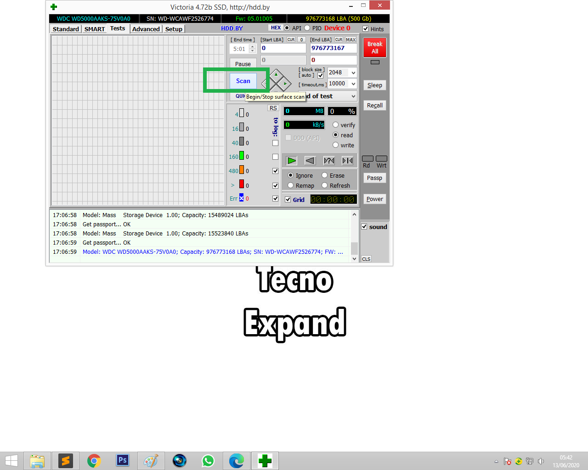

Como reparar discos duros defectuosos o dañados 2020
Antes de comenzar queremos dejar claro que este método se puede hacer siempre y cuando tu computadora pueda leer el disco duro, en caso que ni tu PC ni en otra computadora lee el disco duro, no podrás hacer esta solución por que es vital importancia que la PC o la placa madre puede reconocer el disco duro, ahora vamos con la solución.
¿Es una soluciona fácil que no correré riegos de dañar mi PC?
No pasa nada, además todo lo hará los programas siempre y cuando hagas todo tal y cual como te vamos a enseñar a continuación, lo único que vas a necesitar para esto en caso que no quieras abrir tu PC de mesa o si quieres hacer la prueba en una laptop te recomendamos que uses o compres un adaptador de disco duro a USB, te ayudara en este proceso.
¿Cómo solucionar mi problema de disco duro?
Primero lo que vamos a hacer es verificar si el disco duro está mal o esta pal perro, quiero decir muerto, el programa con que vamos a verificar se llama CrystalDiskInfo

Color Verde significa que el disco está nuevo o como nuevo y no hay posibilidad de que falle.
Color Azul, significa que tu disco está bien. Así a secas, el disco aun puede funcionar unos meses o años en ese estado.
Color Amarillo, te avisa que tomes precaución. Este color te está advirtiendo que hay sectores físicos dañados en los platos del disco y lo mejor sería tomar precauciones y no hacer confianza al disco duro pues en cualquier momento puede llegar a fallar y perderás los datos.
Color Rojo, tu disco está muy mal y no debes de colocar archivos pues serán corrompidos fácilmente y perderás esa información.
Color Gris, para referirse a un estado de muerte del disco, el disco puede ser detectado pero ya no hay posibilidad ni de rescatar datos ni nada.
Hay una manera que podemos arreglar el disco de manera fácil y es con unos cli dándole al color después hacemos lo siguiente, si en caso está en 1 o 2 lo colocas en 0 dándole a la flecha izquierda y listo, y si en caso todavía te sale el color rojo (Si es en tu caso que salga el color rojo) nos vamos al siguiente programa que con este se solucionará el problema.
¿Con esto ya repare mi disco duro?
Del todo no, a tenerlo en azul quiere decir que el disco está bueno pero este programa va a ayudar a reparar los sectores defectuoso si es que lo tiene, sería este Victoria. Ya el programa descargado lo ejecutan como administrador.
Lo que vamos a hacer es seleccionar el disco duro después nos vamos a ir a test ya seleccionado el disco
Solo les voy a dar una pequeña explicación sobre este programa para que se guíen como funciona, estos pequeños número que vemos aquí significa el riesgo que puede tener si llega a 200 como les digo ya quieres decir que está en peligro que en cualquier momento te va a tirar 3 queremos decir que está grave y estás propenso a perder tus archivos, te recomendamos recuperar archivos guardado que tengas allí sabiendo esto ahora si vamos a repararlo y lo vamos a hacer haciendo clic stark o scan, OJO ya seleccionado el disco que queremos reparar en stander.
¿precauciones?
La unica precaucion que debes de tener en cuenta es que cuando el programa haga su proceso no toques nada, no navegues,no internet, sin usar la pc hasta que termine.
Si esta compañia TECNO EXPAND te ha podido ayudar con este articulo puedes seguirno en Facebook o en instragram esatremo subiendo contenido de ayuda, soluciones o avance de empresas grandes.
Quizas te puede interesar